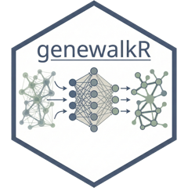

Install the genewalkR agent skill
install_agent_skill.RdgenewalkR ships a skill that teaches coding agents how to use the package:
the workflows, the staged S7 pipelines, the params_*() bundles and the
traps. This copies it out of the installed package to where your agent looks
for it.
The skill is versioned with the package, so re-run this after upgrading genewalkR to keep the agent in sync with the code.
Usage
install_agent_skill(
dest = NULL,
agent = c("claude", "codex", "generic"),
overwrite = FALSE
)Arguments
- dest
String or
NULL. Directory to install into.NULLpicks the default foragent:"~/.claude/skills"for"claude"and"~/.codex/skills"for"codex". Required for"generic". The skill lands in agenewalkrsubdirectory of this.- agent
String. One of
c("claude", "codex", "generic"). Controls the name of the entry file and whether the frontmatter is kept.- overwrite
Boolean. Replace an existing installation. Defaults to
FALSE, in which case an existinggenewalkrdirectory causes an error rather than a silent clobber.
Details
The reference files are plain markdown and work anywhere. Only the entry file differs between agents:
"claude"writesSKILL.mdwith the YAML frontmatter Claude Code uses to decide when to load the skill. Discovery is automatic."codex"and"generic"writeAGENTS.mdwith the frontmatter stripped, since no other agent reads it. There is no auto-discovery, so point the agent at the directory yourself.
Examples
if (FALSE) { # \dontrun{
# Claude Code, into ~/.claude/skills, auto-discovered
install_agent_skill()
# Codex, into ~/.codex/skills as AGENTS.md
install_agent_skill(agent = "codex")
# anywhere else
install_agent_skill(dest = "~/my-agent/context", agent = "generic")
# refresh after a package upgrade
install_agent_skill(overwrite = TRUE)
} # }